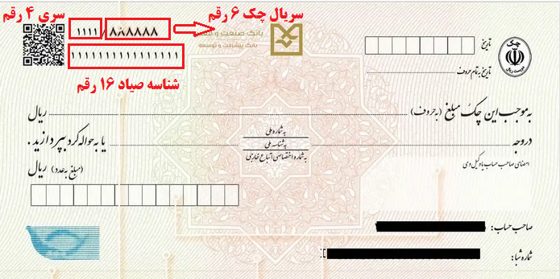

به ریال:
به تومان:
مراحل ثبت چک صیادی معمولاً این ترتیب را دارد:
۱) ورود و احراز هویت
۲) انتخاب «ثبت چک»
۳) درج شناسه ۱۶ رقمی
۴) وارد کردن مبلغ و تاریخ
۵) ثبت کد ملی/شناسه ملی گیرنده
۶) تایید نهایی
برای ثبت چک صیادی از طریق پیامک، باید اطلاعات چک را با فرمت خاص به سرشماره ۴۰۴۰۷۰۱۷۰۱ ارسال کنید. فرمت پیامک ثبت چک: #شناسه/کد ملی گیرنده*مبلغ به ریال*تاریخ سررسید (YYYYMMDD)*شناسه صیادی*کد ملی صادرکننده*۳*